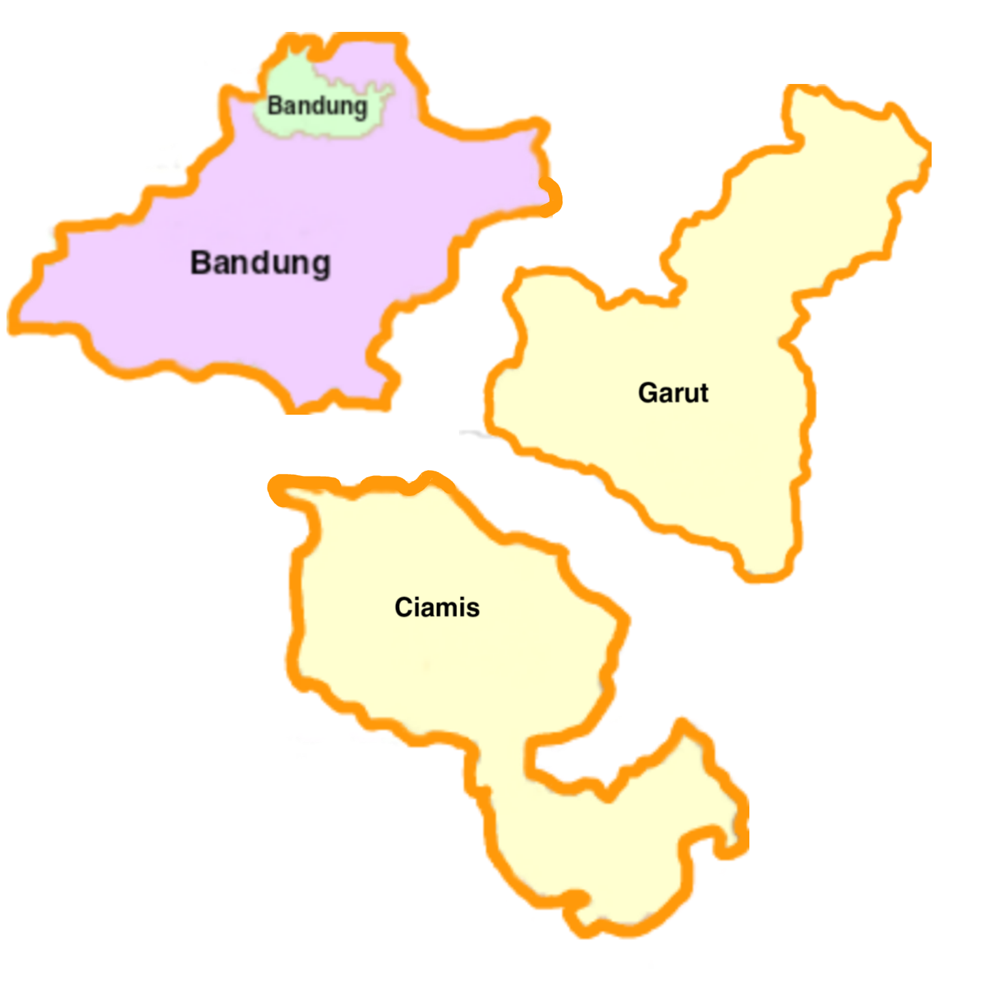
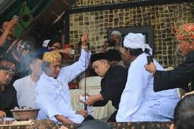
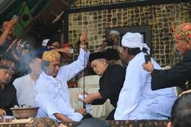

Bandung,Garut,Ciamis

Nama anggota mapel ppkn
-Agista Lisdya Putri Waluya/2
-Bagus Dwi Saputra/6
-Ramadhan Al Farisi/21
-Hafids Maulana/10
Upacara Adat Nenjrag Bumi
Bandung

Upacara adat Nenjrag Bumi
Upacara ini merupakan Bentuk
Penghormatan kepada nenek Moyang.
Tujuan ritual ini Bertujuan supaya bayi tidak mudah kaget dan ketakutan.
Upacara Adat Nyangku
Ciamis
Upacara Adat Nyangku
Desa Panjalu Kabupaten Ciamis,Upacara ini merupakan upacara adat mencuci benda pusaka
Upacara Adat Ngalungsur Geni
Garut
 

Upacara Adat Ngalungsur Geni
Ngalungsur geni merupakan upacara adat siraman benda pusaka. Siraman sendiri memiliki arti mencuci. Ngalungsur berarti meneruskan dan geni adalah salah satu benda pusak